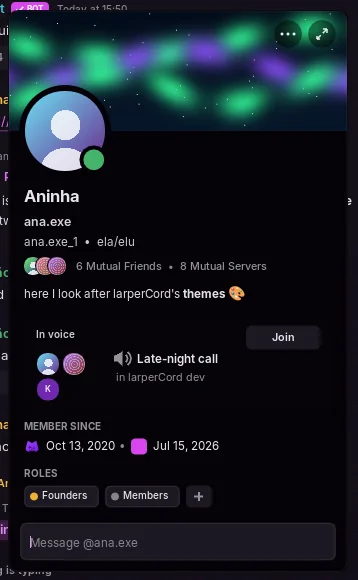
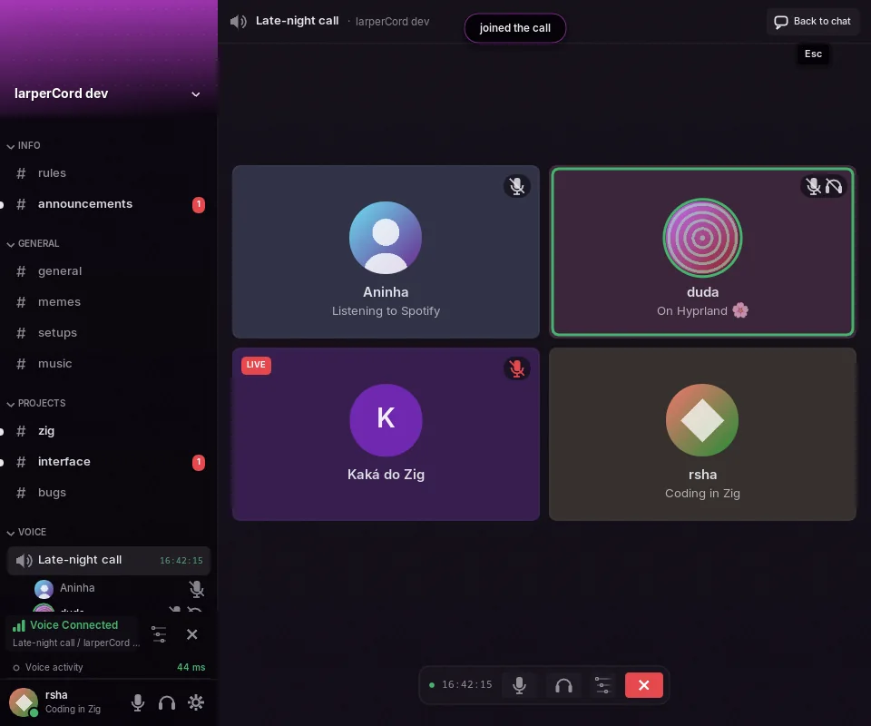
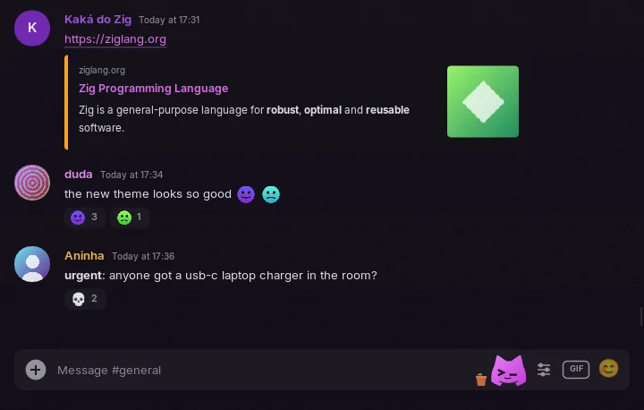

Feature tour
Everything here works in demo mode, except where it needs the real network. For what's missing or partial, see Status and roadmap.
Conversations
- Messages: send, edit (
↑in an empty box edits your last one), delete, and pending messages confirmed by the server. Messages are grouped, with day separators. - Replies, with the little curve and a click that jumps to the original. "@ ON / @ OFF" in the reply bar chooses whether the author gets pinged, and a reply to a message with no text shows what it had (a file, a sticker, a voice message, a poll).
- Send options next to the GIF button: a silent message (or
@silentat the start), no link previews, or no pings. Each file in the upload tray can be a spoiler and have alt text. - Reactions, an emoji picker and a hover action bar on every message. Right-click a reaction, or use View Reactions, to see who reacted.
- Polls: vote, remove your vote or see the results first, and click an answer to see who voted for it.
- Text selection across several messages with the mouse, then
Ctrl+C. - Multi-line composer: wraps long text and grows up to 10 lines.
Entersends andShift+Enteradds a line. Arabic and Hebrew you type show in the right order and line up to the right, like in sent messages, and the cursor, clicking, selecting,Backspace,←and→follow the text on screen. - Drafts per channel: unsent text comes back when you return to the channel, even after closing the app.
- History loads as you scroll up, without jumping the screen, on a virtualized list.
- System messages: joins, calls, pins, boosts.
- Message log (optional): deleted messages stay on screen, marked, and edits keep the original. Local only.
Threads and forums
- Threads sit under their parent channel, collapsible and with unread counts. They open like any conversation, with tabs, split view, drafts, cache and search.
- The message that started a thread shows a card with the message count and the last activity. Creating, joining and leaving threads, and the archived ones, are in the menu.
- Edit Thread…, in its menu or by clicking its title, changes the name, a forum post's tags and auto-archive; archiving and locking are one click. Only what you're allowed to do appears. The threads panel has a Private tab with archived private threads.
- Forums and media channels show their list of posts instead of a conversation, with local search, sorting by activity, more pages on demand and New Post with title, tags and text.
- Permissions come from the parent channel, and the member list shows who's in the thread.


Emoji and autocomplete
- Custom emoji show as images, animated ones too, large when a message is only emoji, and in reactions. PNG, APNG and GIF stickers show as images, and the GIF picker's Stickers tab sends them.
- The picker has the full Unicode list, search in Portuguese and English, recents and your servers' emoji, and it warns when an emoji needs Nitro.
- Autocomplete: in the text box,
@,#,:aband/open a list (/lists the slash commands of the server's bots and of your apps). Use the arrows, thenTaborEnter,Escor a click. Names with spaces become real mentions when you send. - Data saver shows custom emoji as
:name:and downloads nothing.


Reading and pins
- Read state synced with Discord: unreads and mentions are right when you open the app, and reading on another device clears them here. Read confirmations work like the official client's, at most one per channel every 3 seconds, and none on its own while the window is unfocused.
- Mark as read per channel and per server, and mark as unread from any message.
- The new messages line comes with a button that jumps to the first one. Channels open at the first unread, which you can turn off in Settings → Chat.
- Pinned messages: the pin icon in the header, and pin or unpin from the menu. Jumping to any old message loads the history around it, with Jump to present to come back. The pins panel loads more than 50 with Load more.
- Discord links open in the app, including
ptb.andcanary.ones. Invites become a card with the server and its members and a Join button. Joining warns first that joining or leaving many servers quickly is the most common reason third-party client accounts get locked. - Clicking
@someoneopens their profile, clicking#channelopens the channel, and hovering a timestamp shows the full date.

Markdown
Bold, italic, strikethrough, code, spoilers, <@id> and <#id> mentions, links and color emoji. Code blocks get highlighting in the theme's colors from the block's label (zig, c/cpp, js/ts, py, rust, go, sh, json, lua, java/kotlin, c#, diff) and a Copy button. Optionally, a live preview sits above the composer while you type.
Also: #, ## and ### headings, -# small text, > and >>> quotes, lists, and [text](url) links that show the real address on hover. Code blocks with more than one line have line numbers (they stay out of what you copy). While you type a block, a language server you choose can point out errors.
Bots and cards
Bots and webhooks carry a BOT tag next to the name, with a check mark for verified bots. Each webhook message keeps the name and picture it was sent with, and its card has no "Message" box, since a webhook isn't an account.
Embeds and Discord's newer component messages show text, thumbnails, separators, galleries, files and link buttons. Text in them can be selected and copied with Ctrl+C. Forwarded messages appear as cards.
Buttons and select menus talk to the bot, with a loading indicator and "This interaction failed" when it doesn't answer. Bot forms (modals) open in the app, and typing / opens a panel for a slash command's subcommands, options and files. Replies only you can see say so and can be dismissed. App commands in the right-click menu and files inside bot forms aren't supported yet.
Media
- Images and GIFs, with a fixed-size cache, full-screen view, and upload by picker, drag and drop or
Ctrl+V. WebP and animated PNG are decoded too. Long GIFs play every frame, and the star on a GIF adds it to your favorites. - Spoilers and sensitive media stay behind a cover until you click, with nothing downloaded before. Images whose Discord link expired are refreshed on their own.
- Voice messages have a player with a waveform to seek. Recording them isn't supported yet.
- Embeds as cards: color, author, title, description in markdown, fields, image, thumbnail and footer.
- Video in the chat for attachments and direct
.mp4/.webmlinks, through FFmpeg 7, 8 or 9, which is only loaded on the first play. On Linux it's your system's FFmpeg (older distros ship an older one, which is ignored). On Windows, Settings → Chat → Download FFmpeg downloads and installs it (about 80 MB, checked against a SHA-256), or the app uses FFmpeg DLLs it finds next tolarpercord.exeor in anyPATHfolder. On both systems, Choose FFmpeg folder… in the same place takes a "shared" FFmpeg build you already have, and when FFmpeg isn't found the page says why: a staticffmpegonPATHwithout the libraries (what winget, choco and gyan.dev install), a version the app doesn't use, or a library that didn't load and the system's reason. Play and pause, a progress bar and sound, up to 854×480 at about 30 fps. Off-screen video pauses, and 30 seconds later everything is released. Without FFmpeg, it opens in the browser. - Data saver: images, avatars and attachments only download when you click.
Finding things
- Command palette (
Ctrl+K, orCtrl+Shift+Pfor actions first): fuzzy search over channels, DMs, servers, themes, status, settings pages and every toggle. - Search (
Ctrl+F): runs over memory and the local cache on every keystroke, with no internet. Results jump to the message.
| Filter | Finds |
|---|---|
from:name | messages by that person |
in:channel | messages in that channel |
has:link | messages with a link |
has:image | messages with an image (has:imagem also works) |
has:file | messages with a file (has:arquivo also works) |
"exact phrase" | that phrase |
Search ignores case and accents, so nao finds não.
- Inbox (
Ctrl+I): unread DMs and mentions from every server, grouped by channel, with previews, jump to message and "mark all as read". A second tab shows recent mentions from Discord. - Saved messages (
Ctrl+Shift+S, or right-click → Save message): up to 500, with a note of up to 1,000 characters. Stored only on your computer, and nothing goes to Discord.
Layout
- Tabs for open channels.
Ctrl+Clickopens one in a new tab, and middle-click closes. - Split view: "Open to the Side" in a channel's menu puts up to 3 conversations side by side, each with its own history and scroll position. The composer and header follow the focused pane.
- Resizable panels: drag the edge of the channel list, the member list or the panes of a split view. A double-click goes back to the theme's width. Your choice is saved, follows you between themes, and gives way when the window gets too small for the conversation; Settings → Appearance can reset it.
- Hide the member list or status bar in Settings → Appearance, and the conversation takes the space.
- Server folders from your Discord settings, updated live.
- The DM list keeps the most recent conversation on top, live: a message you get or send moves its DM up right away, and a DM you closed comes back when a new message arrives in it.
- Interface size from 75 to 200% in Settings → Appearance, or
Ctrl+,Ctrl-andCtrl0from anywhere.F11orAlt+Entertoggles fullscreen. - Friends screen: requests, accepting and cancelling them, starting DMs, and an Add Friend tab that takes a username. DMs from people who aren't your friends go to Message Requests, with a Spam tab, and don't notify.
People
- Profile card with banner, accent color, bio in markdown, pronouns, mutual friends and servers, current game with elapsed time, and the call they're in, with a Join button.
- Server profiles: in a server, people show the nickname and picture they set for that server instead of the global ones, wherever they appear: messages, replies and mentions, the member list, the voice channel list, the call screen and the mixer, and the
@list in the message box, which finds people by either name. The profile card shows the server nickname with the global name smaller underneath, plus the server bio, pronouns and banner when they set them. DMs and groups keep the global name and picture. - Full profile with tabs: activity, mutual friends and servers, connections, badges and your private note.
- See it bigger: click a profile banner or picture to open it in full. A server's banner opens the same way from the channel list, and the server and user menus have View Icon and View Picture.
- Status picker: online, idle, do not disturb, invisible, for 15 minutes up to 3 days or until you change it, saved to your account. Click your name for a custom status with an emoji and when it clears.
- Block, unblock and Add Friend from a person's menu or profile. Settings → My Account edits your display name, pronouns and About me.
- Rich Presence (off by default, in Settings → Privacy): games that support it show what you're playing.
- Roles: member list by role with real colors, and giving or removing roles when you have permission.

Attention
- Alert words count as mentions. Up to 64 words, matched as whole words, ignoring case.
- Word filter collapses matching messages behind a click, and they never notify.
- Ignore hides someone's messages without blocking them, saved to your Discord account. People ignored before 0.6.2 stay ignored on this computer only.
- Focus mode: for 15 minutes, 30 minutes, 1 hour or until you turn it off, only DMs and mentions notify and mark unread.
- Desktop notifications, only while the window is unfocused or hidden in the tray, plus taskbar flashing. On Linux they go through
notify-send(from libnotify), and on Windows they're Windows notifications from the tray area. Muted channels never notify. Mute and notification levels (all, mentions, nothing, suppress @everyone or role mentions) sync with your account.
Channels you can't open
The app computes permission overwrites per channel the way Discord does (@everyone, your roles, you). A channel without access appears dimmed with a padlock and a hint, and clicking only tells you so, instead of asking the server. Voice channels you can't join get the same treatment. When you can't send, the message box says why: no permission, a locked thread, a timeout or an AutoMod quarantine. It also shows slowmode, with a countdown after you send.
Servers and groups
With the Manage Server permission, right-click the server to edit its name, description, icon and banner. Any member can rename a group DM and change its icon. Deleting a thread asks for confirmation and needs Manage Threads. A server's banner appears at the top of the channel list and on invite cards.
Moderation: kick, ban, time out, and server mute or deafen from a person's menu, or the ⋯ on their profile card, only when your role allows it. Kick, ban and timeout ask first and take a reason for the audit log, and timed-out members show a small clock. Bans in the server menu lists and unbans people.
If a server asks you to accept its rules, the message box says so and opens them; servers with onboarding have Server Onboarding… in their menu. Right-click a group DM → Group Members… to add friends or, as its owner, remove someone.
Calls
Real voice with end-to-end encryption, in server voice channels and in DM and group calls. Clicking a voice channel opens the call screen, one tile per person in the theme's style. The mixer has a volume for each person, plus Remove noise and Even out volume per person, off by default. Voice channels show how long their call has been going. There's also a device picker, push-to-talk and filters. See Voice calls.

The mascot
Terminal, the main mascot, plays an opening while the app connects (five to pick from), naps where a list is empty and, as the corner mascot, sits on the message box: it follows the mouse, reacts to what you write, can be grabbed and thrown, and does things on its own when you leave it alone. Settings → Mascot switches to the Classic mascot, sets how lively it is or turns the corner mascot off. See The mascot.

Network and languages
- Proxy for HTTP, HTTPS, SOCKS5 and SOCKS5h (Tor at
127.0.0.1:9050), with separate fields for the address, port, login and password, for external media only or for everything except voice calls, which always connect directly. It's in Settings → Network and on the sign-in screen, which offers it when it can't reach Discord. - English and Portuguese across the UI, network notices, demo data and theme options, and the whole interface in Japanese and Russian, including the built-in themes' descriptions and options. Discord timestamps, relative ones too ("3日前", "3 дня назад"), follow the language. Translations are one file per language (
i18n/ja.kdl,i18n/ru.kdl), so a new language needs no code. It follows your system by default. - Text in any language: Arabic letters are joined and right-to-left text comes in the right order, in messages and in the message box. A letter the theme's font lacks, in any script, comes from a system font that has it. Scripts that need shaping, like Devanagari or Thai, show their letters one by one.
Make it yours
- Themes rearrange the entire interface and reload on save. On Linux, themes with
palette "wal"follow your wallpaper through pywal, and thevidrotheme's transparent background is blurred by your compositor (Hyprland, KDE…). Windows has no blur, and it only reads pywal's colors when theHOMEvariable is set, without following the wallpaper live. - Plugins in Lua add panels, right-click entries, notes under messages, commands and keybinds. Scam guard, CVE radar, GitHub cards, what did I miss, translate, reminders, highlights, clean links, and links and files come with the app.
- Your own shortcuts: the palette, search, settings, inbox, saved, themes, fullscreen, tabs, mute and deafen can take other keys in Settings → Keybinds. See Changing a shortcut.
- Optional vim navigation: see Shortcuts.
- The mascot: pick Terminal or Classic, its opening and how lively it is, or turn the corner mascot off.